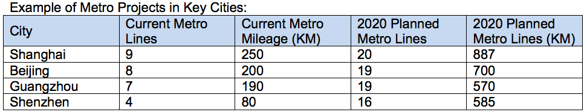

Railway Industry Opportunities
The investment scale of the new railway line during 12th Five-Year Plan (12th 5YP) period (2011–2015) should reach 30,000 kilometers. By the final phase of the 12th 5YP, the total railway operating mileage is planned to increase from the current 91,000 kilometers to around 120,000 kilometers. 60 percent of lines will be electrified, while 50 percent will be double-track lines. The high speed railway will reach 16,000 kilometers. Railway in the western area could reach 50,000 kilometers. The number of new and renovated railway stations will reach a total of 1,015. At the same time, there will be a large number of advanced technical equipment put into use.
During the 12th 5YP period, the total railway investment is expected to reach RMB 2.8 trillion. Compared with railway new line investment during the 11th 5YP, new line investment during the 12th 5YP period is expected to increase by 87.5 percent, with total investment to increase by 41.4 percent.
It is estimated that by 2020, an additional RMB 2 trillion will be invested, of which approximately RMB 600 billion will be earmarked for development of infrastructure related to passenger-dedicated lines, the coal corridor, western lines, and inter-regional connections. China's total rail network will exceed 120,000 kilometers in length, possibly reaching 150,000 kilometers, and 17,000 kilometers of rail will accommodate double-decker trains. In 2012, total fixed asset investment in railways will reach RMB 500 billion, including RMB 400 billion for construction.
Metro Industry Opportunities
In 2011, NDRC approved 13 metro rail lines, including Hefei, Changchun, Dalian, Wuhan and Shenzhen. 2,500 kilometers will be completed during the 12th 5YP period. By 2015, 35 cities in China will have metro; there will be around 158 metro lines in total; and total mileage of Metro in China will reach to around 4,200 kilometers with a total investment of $178 billion. By 2020, China is expected to have 6,100 kilometers of urban rail lines.
